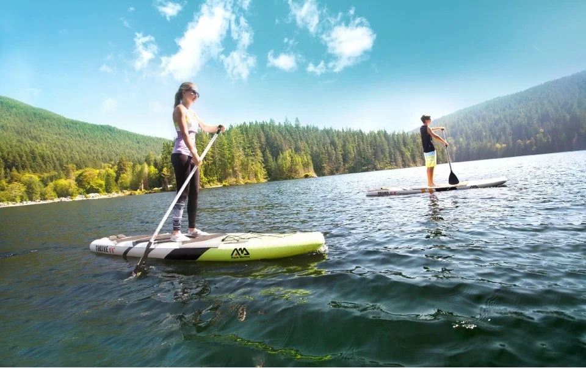

Развлечения
Пляж
Единственный песчаный пляж на озере Тургояк — золотой песок, пологий заход в воду и вид на остров Веры. Около 200 метров береговой линии прямо у домов и кемпинга.
Размер и расположение
База отдыха «Золотые пески» занимает живописную прибрежную зону озера Тургояк. Природная бухта и натуральный озёрный «золотой» песок делают наш пляж уникальным — это единственный песчаный пляж на всём Тургояке.
- Протяжённость — около 200 метров собственной береговой линии.
- Расположение — прямо у домов и зоны кемпинга, с выходом на бухту и видом на остров Веры.
- Покрытие — песок (без гальки). Пологий комфортный заход в воду, удобно для детей.
- Доступность — пляж доступен гостям базы и кемпинга. Дневное посещение — по платной парковке (1000 ₽ без ограничения по времени).
Инфраструктура пляжа
База находится в природоохранной зоне Тургояка (менее 50 м до озера), поэтому центрального водопровода и канализации нет. Инфраструктура соответствует режиму ООПТ и бережному отношению к озеру.
Лежаки и зонты
Пляж не оборудован стационарными лежаками. Можно пользоваться своими покрывалами и полотенцами. Аренда наших шезлонгов — 500 ₽ в день. Свои стулья/кресла/шезлонги — 200 ₽ с единицы (при парковке на нашей стоянке плата за свои кресла не взимается).
Туалеты
На территории есть большой дачный туалет. Он расположен удалённо от берега, в соответствии с требованиями природоохранной зоны.
Душ и раздевалки
Душевых и умывальников на территории нет — только русская баня на дровах. Вода в озере чистая (проводятся анализы), многие гости ополаскиваются в озере. Раздевалок нет — переодеваются в своих домиках/палатках или за полотенцем.
Кафе и бар
На базе общественного питания нет — все готовят самостоятельно на мангалах и на кухнях в домиках/общей кухне. Ближайшие кафе — в посёлке (около 18 минут на автомобиле).
Сезонность и температура воды
Когда открыт пляж
База работает апрель–октябрь. Кемпинг также открыт в этот период. Пляж доступен в светлое время суток в течение всего сезона работы базы.
Температура воды по сезонам
- Май–июнь — +16…20 °C
- Июль–август — +20…24 °C (основной купальный сезон)
- Сентябрь — +18…22 °C
- Октябрь — +12…16 °C
Купальный сезон комфортен с мая по сентябрь. Озеро чистое, одно из самых прозрачных в России.

Правила купания
Безопасность
- • Купание на свой страх и риск.
- • На пляже дежурит спасатель.
- • Детей не оставляйте без присмотра — у берега есть мелководные участки, но контроль взрослых обязателен.
- • При аренде плавсредств (сап, байдарка, лодка) выдаются спасательные жилеты.
- • Озеро чистое, качество воды контролируется (проводятся анализы).
Рекомендации
- • Не заплывайте далеко в одиночку.
- • У берега глубина нарастает постепенно — удобно для детей и неспешного купания.
- • Максимальная глубина озера — до 36 м; в бухте у пляжа — комфортные для купания глубины.
- • Берите с собой полотенца и головной убор.
Ограничения
- • Установка своих мангалов, столов и другого оборудования на территории пляжа запрещена. Для пикника — аренда мангальной зоны.
- • Соблюдайте тихий режим: громкая музыка в течение дня не приветствуется, после 22:00 музыка запрещена.
- • С собаками — только с поводком и намордником (для крупных); посещение с собакой — 1000 ₽ с животного.
При аренде плавсредств выдаются спасательные жилеты. Плавсредства выдаются под залог. Детей у воды не оставляйте без присмотра.
Пляж и озеро Тургояк
Песчаный берег, чистая вода и виды на остров Веры — наш пляж один из лучших на Тургояке.
Озеро Тургояк
Озеро Тургояк расположено в Челябинской области, близ города Миасс. Возраст озера — около 2 миллионов лет. Оно образовано в глубокой котловине, в него впадает несколько рек, питают водоём и грунтовые воды. Вокруг — хвойный лес и шесть островов; крупнейшие — остров Чайка и остров Веры (археологический памятник).
Озеро официально входит в список «Чудеса России» и считается вторым по чистоте после Байкала. Вода прозрачная, пригодна для купания и отдыха. Максимальная глубина — до 36 метров; у нашего берега — пологий песчаный заход и мелководные участки для детей.
На Тургояке возможна рыбалка: окунь, щука, налим, чебак и другие виды. Рыбалка с берега и с лодки разрешена, лицензия не требуется; установка сетей запрещена.